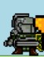
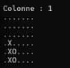

Je réalise des projets concrets liés à mes études.


Travail sur l’adressage IP pour faire jouer différents clients ensemble.
Voir le projetJe suis étudiant en informatique et je m’intéresse principalement au domaine des réseaux. J’aime comprendre comment les machines communiquent entre elles, configurer des architectures fiables et analyser ce qui se passe réellement derrière une infrastructure. J’apprends en pratiquant, à travers des projets concrets qui me permettent de progresser et de développer mes compétences techniques.
1ère Année de BUT Informatique à Nevers.
remibonnin630@gmail.com